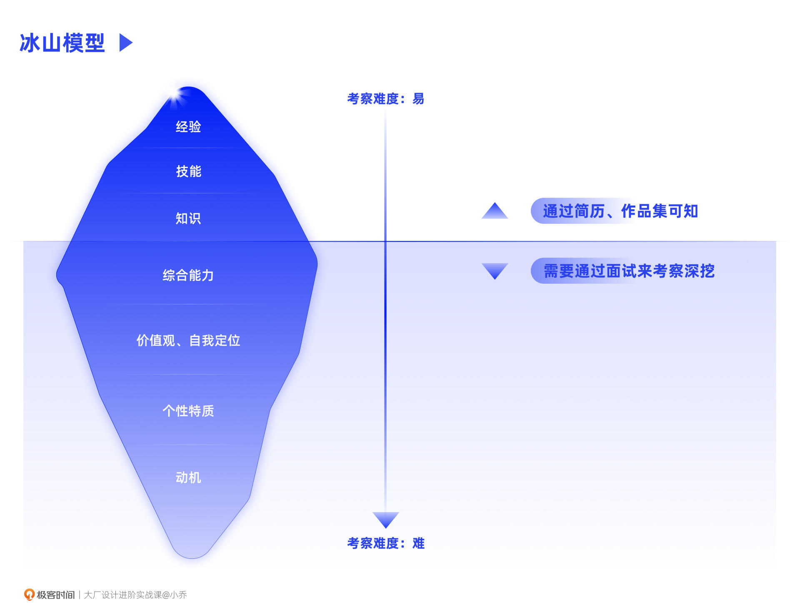
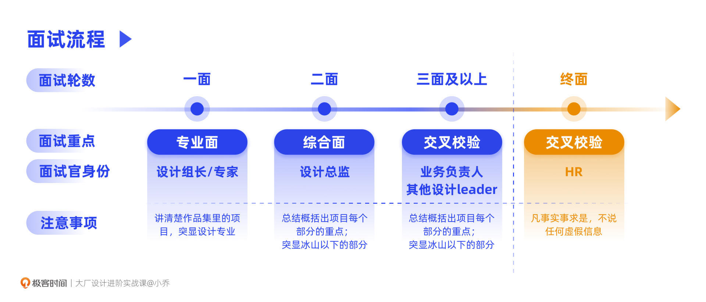

- 00 开篇词 升维思考，是设计师有效成长的第一步.md.html
- 01 业务周期：0-1-10-100-N的发展策略.md.html
- 02 商战模式：如何在商业竞争下突出重围？.md.html
- 03 市场洞察：如何找寻差异化撬动支点？.md.html
- 04 用户洞察：不懂用研的设计师不是好职场人.md.html
- 05 用户画像：是形式主义还是真的有效？.md.html
- 06 用户旅程：挖掘不同用户的核心机会点.md.html
- 07 职场晋升：看懂晋升的“游戏规则”.md.html
- 08 设计价值升级：五层进阶突破成长.md.html
- 09 基础价值 核心三原力：如何将需求转化为设计稿？.md.html
- 10 基础价值 第一性原理：从问题本质解决问题.md.html
- 11 基础价值 设计复盘：只是量化设计结果吗？.md.html
- 12 二级价值 负向网兜：如何全面发现负向问题？.md.html
- 13 二级价值 设计自驱：如何做好项目Owner？.md.html
- 14 二级价值 自驱合作：如何反内卷处理合作关系？.md.html
- 15 三级价值 增长误区：思维惯性陷阱和虚荣数据.md.html
- 16 三级价值 用户增长历程：AARRR是万能的吗？.md.html
- 17 三级价值 产品增长：如何做好产品创新？.md.html
- 18 三级价值 运营增长：如何自驱营销活动和投放？.md.html
- 19 三级价值 品牌增长 抢占心智，赢得人心红利.md.html
- 20 三级价值 增长实操：如何“步步为营”推动落地？.md.html
- 21 四级价值 L型赋能：让T型人才发挥更大价值.md.html
- 22 四级价值 “网状对比”解决共性痛点.md.html
- 23 五级价值 商业画布：设计师可以担任业务方吗？.md.html
- 24 五级价值 共创洞察：如何做好一次完善的workshop？.md.html
- 25 五级价值 领导力觉醒：写给新晋管理者.md.html
- 26 工作选择（上）：2B or 2C设计师？如何规划领域？.md.html
- 27 工作选择（下）：大厂 or 小厂？如何选择赛道？.md.html
- 28 人才地图：认知自我，成为高潜力人才.md.html
- 29 成长历程：如何从设计小白成长为团队负责人？.md.html
- 30 冰山模型：如何成为让面试官欣赏的“面霸”？.md.html
- 31 作品集指导：什么是面试官喜欢的作品集？.md.html
- 用户故事 什么是职场设计师进阶的正确姿势？.md.html
- 结束语 突破自我，成人达己.md.html
- 捐赠
30 冰山模型：如何成为让面试官欣赏的“面霸”？
你好，我是小乔。
让我们一起来感谢认真学习的你，迎来了我们这套课程的最后两节课。这节课，我们先一起聊聊面试的注意事项，下节课，再针对性地学习作品集的制作方法。希望你可以通过这两节课，进一步了解职场的游戏规则，将自己的能力充分展现出来。
据不完全数据统计，国内几家大厂的面试通过率仅有10%-15%。也就是说，当我们通过简历筛选，获得面试资格后，还要成为那10%的头部人才，才有加入大厂的机会。
今天，我就以一个老面试官的身份，和你聊聊企业到底想找怎样的人才，面试官看重的是候选人的哪些特质，以及面试中经常会被问到的题目。这节课的内容不止适合候选人，也适合未来会成为面试官的设计师，学习面试方法。
以“冰山模型”看懂企业要什么
许多年轻设计师会误以为把作品集做得花枝招展，就是优秀的人才，但这只是获得面试机会的门槛。那企业到底想要怎样的人才呢？我们可以通过“冰山模型”来理解。这套模型是由美国著名心理学家Mcclelland于1973年提出的，将个人整体素质的不同表现，划分为表面的“冰山以上”部分和深藏的“冰山以下”部分。

如上图所示，冰山模型主要分为7个层次（网络上会有一些信息出入，我们以各大厂的管理者培训内容为准），从上往下，逐层深入个人的整体素质。对面试官来说，挖掘难度也逐渐加大。
我们可以分为冰山以上和冰山以下来探讨。
冰山以上
冰山以上分别是经验、技能和知识，这3个方面都可以通过候选人的作品集和简历看出。
经验：就是看过往的工作履历，在什么公司，做过什么业务，擅长什么赛道。
技能：也很容易从作品集看出，候选人是偏向逻辑思维，还是视觉能力更好？是更全链路一些的全面人才，还是精钻某一细分领域的专家？
知识体系：过往履历和作品集中项目的深度，可以反映出这是单点项目，还是完整的0-1-100-N的全案，这些都可以反映出候选人的知识体系。
冰山以下
冰山以下分别是综合能力、价值观与自我定位、个性特质，以及动机。
综合能力：就是认知程度、逻辑表达、项目规划、学习拓展、沟通合作等能力，这些是成为一名合格设计师的基石。
价值观与自我定位：是我们对各种事物、对自己的看法和态度。这个部分是考察候选人与企业文化的匹配程度。我们每个人的价值观和自我定位都是由家庭、教育、社会等因素综合造就的，价值观没有对错，只有适合与否。比如，有些同学看到别人取得了好成绩，就会恶意揣测，而不是观察别人的优点快速吸收，这其实就是企业不太鼓励的价值观。
个性特质：就是为人处事和解决问题的方式。举例来说，大厂普遍青睐的人才，自驱能动性更强，而不是被动等需求；愿意与团队共同成长，格局大，而不是只顾着自己出风头；在遇到困难和挫折的时候，可以冷静地处理问题，而不是玻璃心；做事踏实可靠，科学归因，而不是造假敷衍。
还记得我们讲过的高潜力人才吗？这个部分就是在挖掘候选人是否具备高潜力，高潜力决定了你是可以长期陪伴团队共同成长的人选，或者只是在业务急缺人力时，短期临时顶替的人选。
动机：是指我们的内在驱动力，通常分为3种，成就、亲和、影响力。成就动机在于更高的挑战，亲和动机在于被尊重和喜爱，影响力动机在于自我对他人的影响。我们每个人前进和坚持的动力不同，这同样没有对错之分，企业只是在考量通过怎样的方式，可以长期为员工提供工作的动力。
以我举例来说，成就和亲和是我最为看重的。在成就方面，我喜欢有挑战的工作，热衷于不断突破自己的能力圈边界，这会让我很有成就感；在亲和方面，我十分在意团队同学的成长，真心为他们的发展考虑，他们对我的喜爱和好评，是我没有退休、依然持续工作下去的动力。同理，收到读者们的认可，也是我在忙碌的工作以外，用个人休息时间、全年无休坚持写完这套课程的原因。
冰山以上的部分较容易发生改变，我们曾经讲过，如果新学习一个设计软件，也许仅用一个星期就可以熟练掌握；但冰山以下的部分，通常由家庭、教育、社会等经历积累，越是向下的部分，越是难以改变，这也是面试一定要深挖冰山以下的原因。
我们举例来说，如果现在有一个创意设计师的HC，遇到了两位候选人。其中一位视觉审美很不错，只是不会3D建模，目前的工作尚且用不到3D，但之后有一定可能性会涉及到3D设计；另一位设计师的软件技法都很卓越，不仅平面做得好，3D也很娴熟，可是缺乏业务思维，也不愿意和业务方配合，认为自己就是最优秀的。面对这样二选一的情况，我们会毫不犹豫地录用前者。
用“STAR模型”回答问题
了解了企业在考察什么，我们再来看看面试的流程和回答问题的重点。一般面试流程在3-6轮不等，每一轮考察的内容侧重不同，大致可以分为专业面、综合面和交叉校验。

专业面
一面基本是由团队内的设计组长或者设计专家担任面试官，考察重点是专业面。在“冰山模型”中，以冰山以上的3项专业能力，以及冰山以下的第一层综合能力为重点，确保候选人能高质量完成业务支持，正常与同事们合作。你也许会觉得这些能力似曾相识，没错，其实就是我们讲过的“核心三原力”。
在面试过程中，往往是通过讲述作品集里的项目，来查看候选人的核心三原力，我们下节课也会重点讲述作品集里的项目要如何挑选，每个项目的逻辑架构又该如何展现。
在向面试官讲述作品集、表达自己专业能力的过程中，我们可以运用“STAR模型”来完整表述。STAR，就是situation、task、action和result的首字母缩写。
Situation，情形：这其实就是我们讲过的商业和用户思维，我们处于怎样的背景条件下？为什么要做这个项目？发现了怎样的机会点？
Task，任务：既然发现了机会点，我们的任务是需求承接，还是自驱推动？项目目标和指标是什么？
Action，行动：有了明确的项目目标和指标后，就可以开始行动了。你是一个owner的角色，还是一名普通的组员？你推导方案和推动落地的整个过程是怎样的？
我们会发现，从S到T再到A的过程，类似于我们在核心三原力一课中讲过的“四步拆解法”，从问题到目标拆解，再到具体的设计解法。
Result，结果：方案上线后，结果如何？是已经超出预期了，还是可以优化得更好？有什么经验可以沉淀下来，形成规律或者范式？
这就是完整的STAR模型，和我们曾经讲过的设计复盘方法逻辑相似。同理，作品集如果采用类似的思路，也会更为清晰。
面试的过程，其实就是面试官通过45分钟左右的时间，来考察你的能力。也就是说，TA就只有这45分钟来“赌”你是否适合团队，你也只有这45分钟来充分表现自己的能力。所以在这个过程中，要尽量缩短无效沟通，比如怼着作品集硬读，但讲的内容并不能体现你的能力，这就是无效沟通。
有许多年轻设计师问过我：“小乔姐姐，为什么我面试的时候，面试官让我不要一直讲业务，但设计师不是应该懂业务吗？”通过“STAR模型”，相信你已经明白，面试官考察的是你的能力，而不是业务发生了什么，TA并不关心业务怎么了，TA关心的是面前这个候选人的能力怎么样。
讲业务的部分，其实就只有第一个situation，讲清楚大概背景即可。面试官想听到的，是你怎样推导出商业和用户的机会点。不管业务好坏，这如果都是其他人的工作，就和你没有什么关系。
我们一定要有归因思维，这个业务的什么问题，是因为我做了什么事情，取得了什么结果，而不是我在业务发展的洪流中只是一颗不痛不痒的沙粒，随波逐流、随遇而安。
一面结束后，如果你面试的是执行岗位，也许需要完成笔试题。这也说明面试官在45分钟的面试过程中，尚且无法确认你的专业能力，需要进一步考察。建议在完成笔试题时，不要干巴巴地只放一张视觉设计稿，而应该当作一个小项目来完成，从调研推导到设计方案都应该涵盖。有心一些的同学，甚至还会去找目标用户调研一下，收集一下反馈，有更多的输入给到面试官。
综合面
通过一面后，也就意味着单纯的专业面已经通过，接下来就是综合面。综合面通常会由这个部门的设计总监担任面试官。
在综合面的过程中，面试官会针对我们上述讲的专业面部分再次考察校验，但会比一面更加快捷高效、抓取重点。
比如我团队内负责一面的同学，会听候选人完整讲述2-3个项目，针对里面的细节进行深挖。但我会将考察专业的时间控制在20-30分钟以内，留出一半时间考察冰山以下的部分。这里，我也建议你在二面时，不要对着作品集一页一页地读，要善于总结重点。将STAR模型的每一个部分总结到位，突出自己的能力，才是最为重要的。
通常二面的面试官，没有面试过1000场，也面试过几百场，在看作品集和识人上，眼光会更为犀利，通过作品集就可以对候选人的能力有大概认知，面试只是求证的过程。
在专业方面可以胜任后，面试官就会开始挖掘冰山以下的部分。如果你的面试20分钟左右就结束了，大概率说明面试没有通过，因为面试官无心再继续挖掘。
另外，许多同学在讲述作品集时，会忽略“我是谁”，也就是说，没有讲清楚你在这个项目中的角色。
比如，你是独立全栈地完成了从调研、交互到视觉的工作，还是你有一个交互设计师作为搭档，你只是将TA的稿子视觉化？再比如，规划和推动这个项目的是你的主管，还是你主动规划后，借助主管的力量进一步推动成功的？
如果你有遗漏，面试官就会针对这些问题进行深挖。其实对面试官来说，TA就是要在整个面试过程中获得一颗又一颗STAR。每收获一颗STAR，就代表着一件事情完整讲完了。因此，STAR不仅可以用来问设计项目，也可以问候选人对待其他事情的处理方式。比如，你发现其他团队的同事在和你做一样的项目，你会怎么处理？此时就可以用STAR的结构完整讲述一遍，这个问题的解法，我们在自驱合作一课中重点讲解过。
在此，我罗列了一些面试官常问的问题，你可以有针对性地提前做好准备。
- 专业能力：如果这个项目还有一次优化的机会，你会怎么做？
- 综合能力：在和同事意见不合时，你会如何处理？
- 综合能力：你使用过某某App吗？你觉得还有什么值得优化的地方？
- 价值观和自我定位：可以举例说说你的优缺点吗？
- 价值观和自我定位：你认为自己在当前团队中的定位是怎样的？
- 价值观和自我定位：你对自己的职业成长规划是怎样的？
- 个性特质：是否自驱过项目，是怎样推进的？
- 个性特质：你最近有在学习一些知识、技能吗？
- 动机：你为什么想看新的机会？为什么离职？
- 动机：在之前的工作中，有什么事情让你有成就感或者挫败感？
我们会发现，每个面试官的问法也许不同，但都是在考量我们冰山模型里面的内容。你可以提前调研一下，目标企业的文化是怎样的，这个业务是什么背景，如果你是面试官，会希望招聘怎样的人才。聪明的候选人，往往可以提前预估到面试官的提问。
举个我好朋友的例子，她曾经有份工作是在国外养马。她目前也在一家互联网大厂做战略，这份与众不同的经历形成了加分项，反应了她履历丰富、能力拓展性较高。我们在互联网企业做一个APP是一种业务，在这家企业养马、照料草场、为各国的贵族提供马术服务，就是这家企业的业务。
当她看到这家企业在招聘中国员工时，她很好奇背后的原因，因为国内并不那么适合马术，又为何一定要招聘中国人呢？于是，她调研了这家企业背后的母公司，猜测这家企业是想通过招聘中国员工来做公关宣传，吸引大陆的有钱人成为客户。于是她在面试时，就重点表达了自己有媒体资源，比如曾经在CCTV实习过。她就这样万里挑一通过了面试，要知道其他候选人在养马方面可都比她专业多了。是不是非常聪慧？
提前准备，可以让我们通过面试的概率更大。在二面的结尾，面试官通常会问：“你有什么想问我的吗？”这并不是简单的聊天，而是一次展现自己能力的机会。
你可以针对你本身的好奇来问。可以问一些我们之前课程提过的，关于项目安全性的问题，但不建议问一些“傻瓜”问题。比如，“你觉得我面试表现怎么样？”面试结果和表现，面试官是不可以透露给候选人的，如果你问了这个问题，等于浪费了一次机会。
我建议你问一些更为专业的问题，彰显自己的认知程度。
比如，对于2B业务，你面试的是一家SAAS服务企业，你可以问一下企业的ROI情况，通常ROI在2-4的企业更值得去，如果ROI只有1，说明一直在断臂流血，很难长久。对于2C业务，你可以提前调研好这个行业CR5的市场占有率，说说你认为可以通过什么方式入局市场，这个也在我们商战模式课程中讲解过。一方面可以显示出你提前做过调研，另一方面也可以显示出你的认知理解能力，当然，这些就需要你日常不断学习和积累了。
交叉校验
二面通过后，通常会由业务负责人交叉面试。如果二面的面试官觉得还不够完善的话，也会再安排其他设计leader交叉面试，这些交叉面试和综合面的内容重点一致。
终面是HR面试，专业的HR，看人的准确程度往往是整个部门的天花板，可以将冰山以下的内容进一步深挖。大家仅需要注意一点，就是凡事实事求是，不说任何虚假信息。尤其是大厂的HR，对于诚信极其看重。网络上会有一些教大家慌报薪资之类的偏门方法，我个人极其不建议，各大厂HR之间的信息是相通的，甚至可以查到你在上一家公司的绩效、薪资、奖金、团队排名，撒谎就等于玩火自焚。
有设计小伙伴问我：“之前在教育业务，被裁员了，要实话实说吗？”是的，要实话实说，面试看的是你的能力和品行，由于不可抗力造成的裁员，并不是你的问题，不用担心。
今日小结
今天，我们一起学习了两个模型，“冰山模型”和“STAR模型”，这两个模型就是面试的底层逻辑。
冰山模型的上方是容易较快培养的技能、知识，冰山模型的下方是较难被改变的综合能力、价值观、个人特质和驱动动机。我们要成功通过面试，依靠的是长期的能力积累和短期的面试准备。如果本身能力欠缺，就想通过学习一些讨巧的方法应对面试，即便“坑蒙拐骗”进入了公司，可能也会难以landing。
“STAR模型”是讲述作品集和回答面试问题的一把利器。不论问题颗粒度是大是小，我们都可以按照这个思路，体现完整的逻辑和价值。S就是先讲清楚项目背景，为什么要做这个项目，发现了哪些机会点；T就是拆解成具体要做的任务，讲清楚目标和指标；A就是具体的推进和落地过程，你是以怎样的角色发挥着作用；R是复盘结果，有没有更好的解法，或者沉淀了什么经验。
聪明的你一定发现了，优秀的人才，往往都是“面霸”，知道企业在意什么，知道面试官想问什么。但只有真材实料的面霸，才能顺利进入心仪的企业，并长期任职。你的职场路径，掌握在你自己的手中，由你自己来决策。
互动时刻
回顾你曾经的面试经历，是否遇到过不通过的情况？现在回想一下，你知道不通过的原因了吗？
欢迎把你的经历和思考在留言区分享出来，与我和其他同学一起探讨。我们建了一个读者交流群，欢迎你的加入！如果你觉得有所收获，也欢迎把文章分享给你的朋友一起学习。我们下节课见。
© 2019 - 2023 Liangliang Lee. Powered by gin and hexo-theme-book.